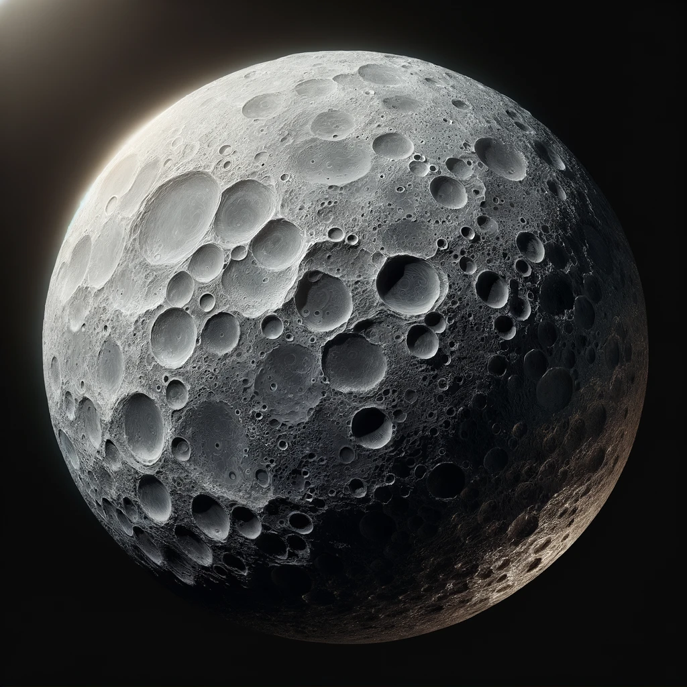
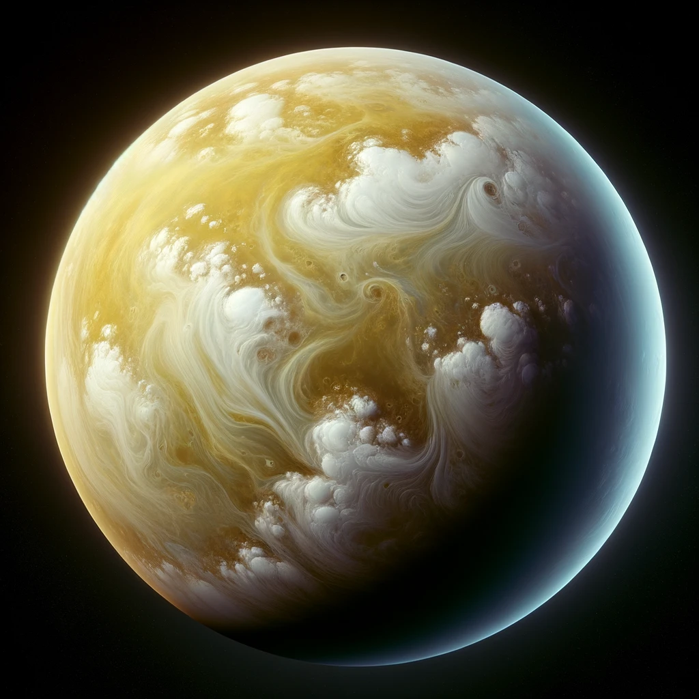
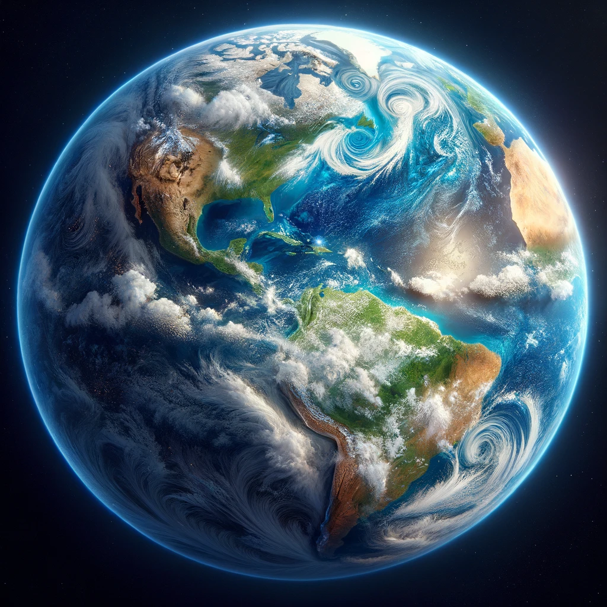
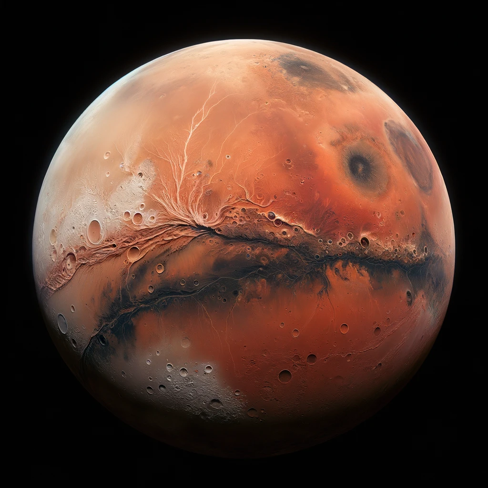
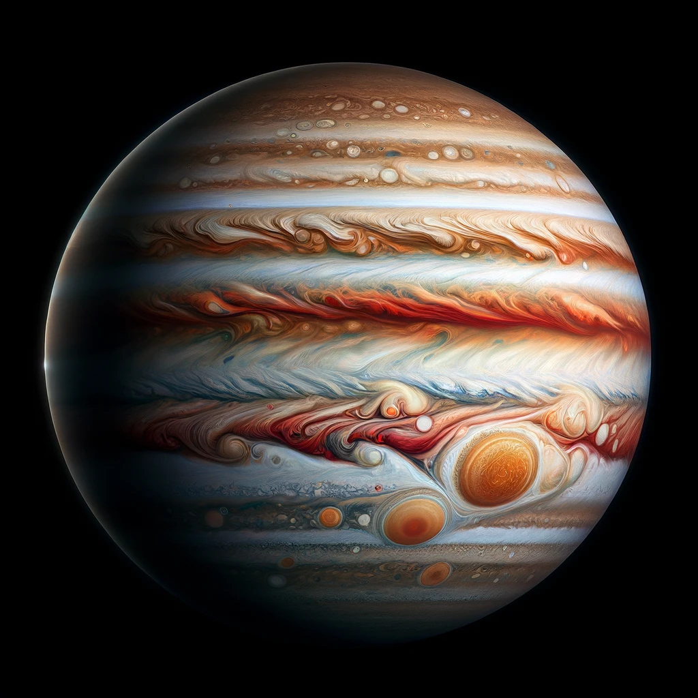
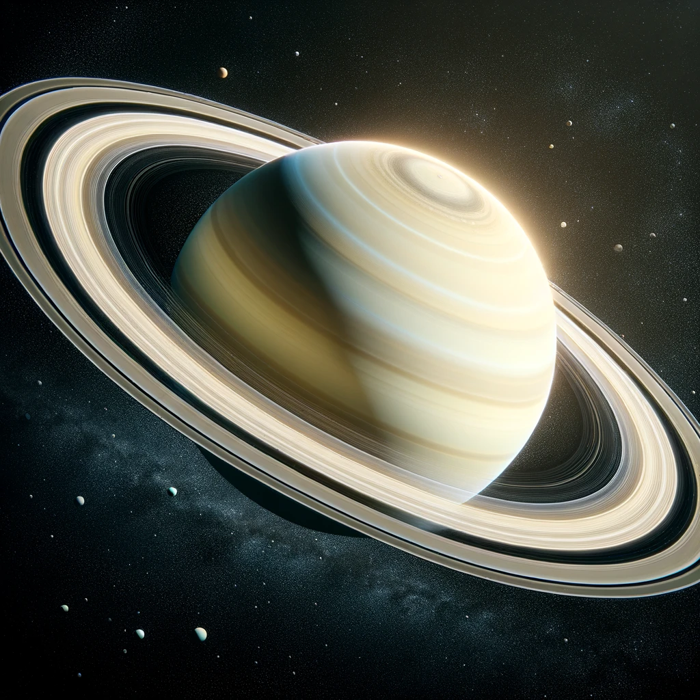
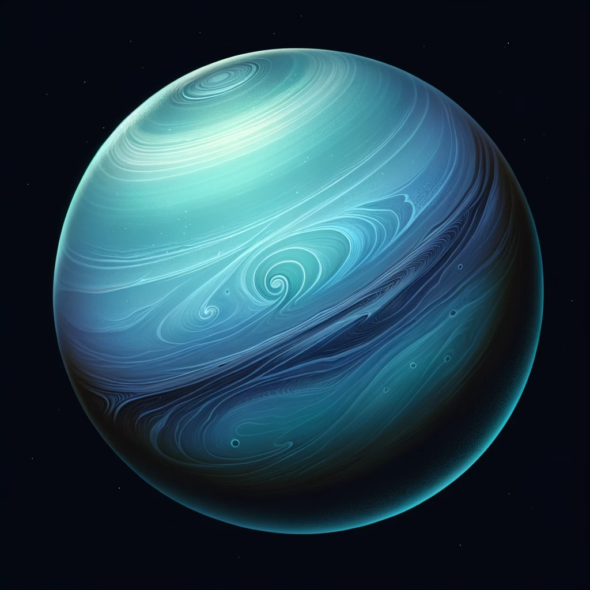
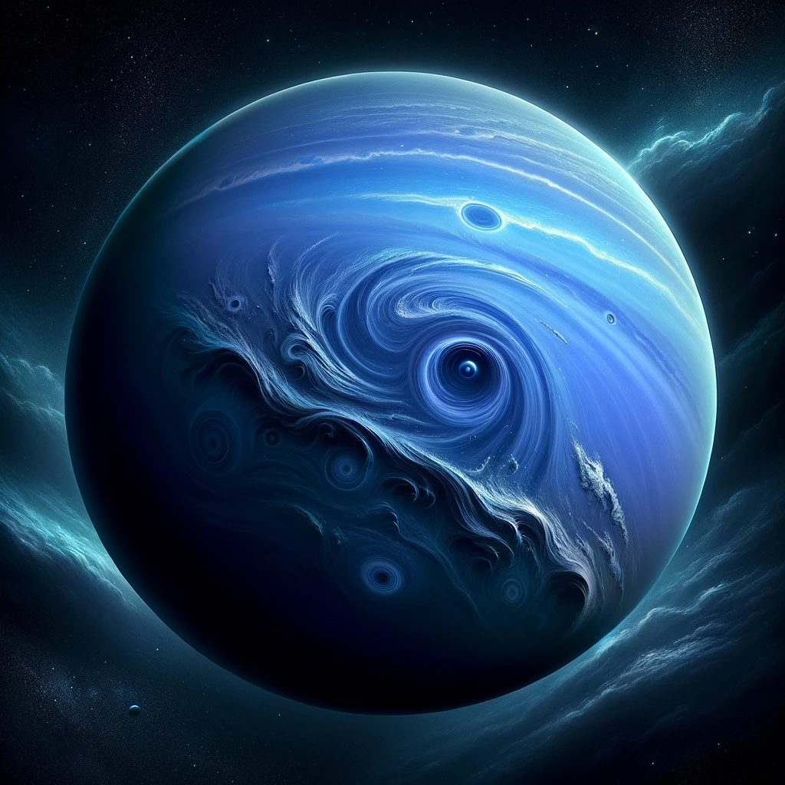

-
 Mercury
The smallest planet in the Solar System, with a rocky, cratered surface.
-
 Venus
Known for its thick, cloudy atmosphere with a yellowish hue.
-
 Earth
Characterized by blue oceans, green and brown landmasses, and white clouds.
-
 Mars
Features a reddish surface with iron-rich dust and polar ice caps.
-
 Jupiter
Massive in size, with bands of clouds and the Great Red Spot.
-
 Saturn
Recognizable by its iconic rings made of ice and rock.
-
 Uranus
Displays a pale blue color with a tilted axis and faint rings.
-
 Neptune
A deep blue planet with dynamic storms and cloud formations.